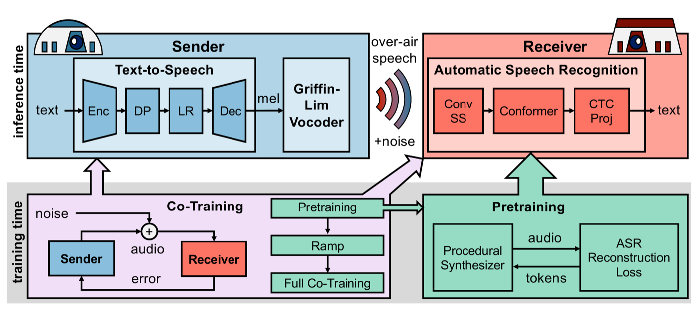

Hanlong Li
Graduate student, Systems and Control Engineering, Institute of Science Tokyo
At IROS 2026 in Pittsburgh, presenting The Talking Robot (code).
Talk: Wed 30 Sep, 14:52, Room 406 (Robot Audition) · Poster: Wed 30 Sep, 16:30–18:00, Exhibit Hall B
About
I am a graduate student in Systems and Control Engineering at the Institute of Science Tokyo, and a Georgia Tech alum. My research focuses on robotics and artificial intelligence, particularly robot perception, embodied AI, and robust communication for multi-robot systems.
I am seeking research internship opportunities in robotics and AI.
Research interests
- Robot perception and embodied AI
- Learning-enabled multi-robot communication
- Robust machine learning for real-world deployment
- Vision and acoustic sensing for autonomous systems
Selected research
Toward Bio-Agentic Visual Communication and Control
Visual communication and state-estimation methods for RF-degraded UAV swarms.
A Concept for Bio-Agentic Visual Communication: Bridging Swarm Intelligence with Biological Analogues
Biologically Inspired Active Visual Communication System and Method
Technical background
- Machine learning
- PyTorch, JAX, TensorFlow, scikit-learn
- Robotics
- ROS/ROS2, Gazebo, Isaac Sim, MuJoCo, PyBullet
- Programming
- Python, C++, Java, JavaScript
- Systems and tools
- Linux, Docker, Git, Raspberry Pi, NVIDIA Jetson, Arduino